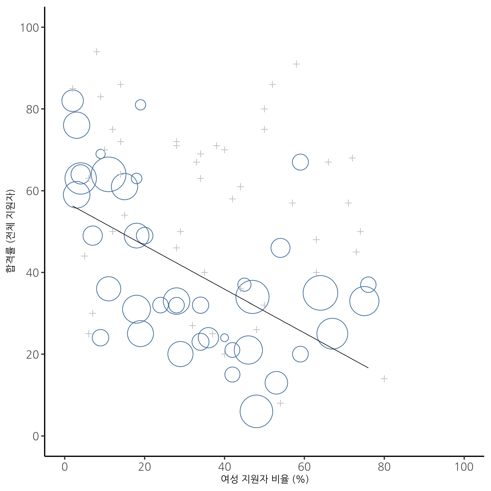

| 결론이 참처럼 느껴짐 | 결론이 거짓처럼 느껴짐 | |
|---|---|---|
| 논증이 타당함 | 100%가 "타당함"이라고 응답 | 100%가 "타당함"이라고 응답 |
| 논증이 타당하지 않음 | 0%가 "타당함"이라고 응답 | 0%가 "타당함"이라고 응답 |
1 왜 통계를 배워야 하는가
\[ \]
질문지에 답하지 말라.
세계 문제에 대한 퀴즈나 설문에도 답하지 말라.
그리고 순응적으로
어떤 테스트도 받지 말라.
통계학자들과 함께하지도 말고,
사회 과학에 관여하지도 말라.
– W.H. 오든1
1.1 통계학의 심리학적 관점
많은 학생들에게 놀라운 사실이겠지만, 심리학 교육에서 통계는 꽤 중요한 부분을 차지합니다. 반면, 아무도 놀라지 않겠지만, 통계는 거의 모든 학생이 심리학 교육에서 좋아하는 부분이 아닙니다. 사실, 통계를 하는 것을 정말 좋아했다면 지금 심리학 수업이 아니라 통계학 수업을 듣고 있을 가능성이 높겠죠. 따라서 심리학에서 통계가 중요한 역할을 한다는 사실에 불만을 가진 학생들이 많다는 것은 놀라운 일이 아닙니다. 이런 상황을 고려할 때, 통계와 관련된 몇 가지 흔한 질문들에 답하면서 시작하는 것이 좋을 것 같네요.
문제의 핵심은 통계라는 개념 그 자체와 관련이 있습니다. 통계란 무엇일까요? 통계는 왜 필요할까요? 그리고 왜 과학자들은 통계에 그렇게 집착할까요? 이 모든 질문은 곰곰이 생각해 보면 꽤 좋은 질문들입니다. 그래서 마지막 질문부터 시작해 보겠습니다. 과학자들은 왜 모든 것에 통계 검정을 적용하려고 할까요? 사실, 우리는 통계를 너무 자주 사용해서 왜 그렇게 하는지 설명하는 것을 잊곤 합니다. 과학자들, 특히 사회 과학자들 사이에서는 “통계 없이는 연구 결과를 신뢰할 수 없다”는 것이 일종의 신념처럼 되어 있습니다. 학부생들은 이런 상황에서 우리 모두가 완전히 제정신이 아닌 것처럼 느낄 수도 있습니다. 왜냐하면 아무도 아래와 같은 매우 단순한 질문에 답하려고 하지 않기 때문입니다:
왜 통계를 사용하는가? 과학자들은 단순히 상식 을 사용하지 않는 이유는 무엇인가?
어떤 면에서는 이 질문이 단순해 보일 수 있지만, 대부분의 좋은 질문들이 단순해 보입니다. 이 질문에 대한 여러 훌륭한 답변이 있지만,2 제 생각에 가장 좋은 답변은 아주 단순합니다: 우리는 스스로를 충분히 신뢰하지 않기 때문입니다. 우리는 우리가 인간이라는 사실, 그리고 인간이 겪는 모든 편견, 유혹, 약점에 취약하다는 사실을 걱정합니다. 통계의 많은 부분은 기본적으로 이런 점을 방지하는 안전장치 역할을 합니다. “상식”을 사용해 증거를 평가하는 것은 직감, 언어적 논증, 그리고 인간의 이성을 사용해 올바른 답을 도출하는 것을 의미합니다. 하지만 대부분의 과학자들은 이러한 접근법이 효과적일 가능성이 낮다고 생각합니다.
사실, 생각해보면 이것은 심리학적 질문처럼 들립니다. 심리학과에서 일하는 제가 이를 더 깊이 파고드는 것이 좋은 생각인 것 같습니다. “상식” 접근법이 정말로 신뢰할 만하다고 생각할 수 있을까요? 언어적 논증은 언어로 구성되어야 하고, 모든 언어는 편견을 가지고 있습니다. 어떤 개념들은 다른 것들보다 표현하기 더 어려운데, 그 이유가 반드시 그것이 틀려서가 아닙니다(예: 양자 전기역학은 훌륭한 이론이지만 말로 설명하기 어렵습니다). 우리의 “직감”은 과학적 문제를 해결하도록 설계된 것이 아니라, 일상적인 추론을 처리하도록 설계되었습니다. 그리고 생물학적 진화가 문화적 변화보다 느리다는 점을 고려하면, 우리는 이러한 직감이 우리가 사는 세상이 아닌 다른 세상의 문제들을 해결하도록 설계되었다고 인정해야 할 것 같습니다. 가장 근본적으로, 합리적으로 추론하기 위해서는 사람들이 “귀납법”을 사용해야 합니다. 즉, 현상의 즉각적인 증거를 넘어 현상을 일반화하는 현명한 추측을 해야 합니다. 여러분이 다양한 방해 요인에 영향을 받지 않고 이를 할 수 있다고 생각한다면, 제가 런던에 있는 다리를 팔아보겠습니다. 심지어 다음 절에서 보겠지만, 우리는 “추측이 필요 없는” 연역적 문제조차도 기존의 편견에 영향을 받지 않고 풀 수 없습니다.
1.1.1 신념 편향의 저주
사람들은 대체로 꽤 똑똑합니다. 우리는 이 행성을 공유하는 다른 종들보다 더 똑똑하죠(물론 이에 동의하지 않는 사람들도 있을 겁니다). 우리의 마음은 정말 놀라운 도구이며, 우리는 믿기 어려운 사고와 추론의 업적을 이룰 수 있는 것처럼 보입니다. 하지만 그렇다고 해서 우리가 완벽한 것은 아닙니다. 심리학자들이 수년간 보여준 여러 사실 중 하나는 중립적이고, 선입견에 흔들리지 않으며, 증거를 공정하게 평가하는 것을 정말로 어렵다는 점입니다. 이에 대한 좋은 예가 논리적 추론에서 나타나는 신념 편향 효과입니다. 사람들이 특정 주장이 논리적으로 타당한지(즉, 전제가 참이라면 결론도 참이 되는지) 판단하도록 요청받으면, 종종 결론의 신뢰성에 판단이 영향을 받게 됩니다. 심지어 그런 영향을 받지 않아야 할 때도 말이죠. 예를 들어, 다음은 결론이 신뢰할 만한 논리적으로 타당한 논증입니다.
모든 담배는 비싸다 (전제 1)
일부 중독성 물질은 싸다 (전제 2)
따라서, 일부 중독성 물질은 담배가 아니다 (결론)
다음은 결론이 신뢰할 만하지 않은 (논리적으로) 타당한 논증입니다:
모든 중독성 물질은 비싸다 (전제 1)
일부 담배는 싸다 (전제 2)
따라서, 일부 담배는 중독성이 없다 (결론)
논증 #2의 논리적 구조는 논증 #1의 구조와 동일하며, 둘 다 논리적으로 타당합니다. 하지만 두 번째 논증에서는 전제 1이 잘못되었을 가능성이 높으며, 그러므로 논증의 결론도 잘못되었을 가능성이 큽니다. 그러나 이는 논의의 핵심과는 무관합니다. 논증이 연역적으로 타당하다는 것은 결론이 전제에서 논리적으로 도출될 수 있다는 것을 의미합니다. 즉, 논리적으로 타당한 논증이 반드시 참된 진술을 포함할 필요는 없습니다.
다음은 결론이 신뢰할 만한 논리적으로 타당하지 않은 논증입니다:
모든 중독성 물질은 비싸다 (전제 1)
일부 담배는 싸다 (전제 2)
따라서, 일부 중독성 물질은 담배가 아니다 (결론)
마지막으로, 결론이 신뢰할 만하지 않은 논리적으로 타당하지 않은 논증입니다:
모든 담배는 비싸다 (전제 1)
일부 중독성 물질은 싸다 (전제 2)
따라서, 일부 담배는 중독성이 없다 (결론)
이제, 사람들이 참과 거짓에 대한 기존 신념을 완전히 배제하고 순전히 논리적 근거에 따라 논증을 평가할 수 있다고 가정해 봅시다. 그렇다면, 타당한 논증은 100% 사람들이 타당하다고 판단하고, 비타당한 논증은 0%만이 타당하다고 판단해야 할 겁니다. 실험을 통해 이를 조사하면, Table 1.1 같은 데이터를 기대할 수 있습니다.
만약 심리학 데이터가 이와 같거나 이와 비슷한 결과를 보인다면, 우리의 직감을 그냥 믿어도 안전하다고 느낄 수 있을 겁니다. 즉, 과학자들이 데이터를 상식에 기반하여 평가하고 복잡한 통계는 신경 쓰지 않아도 괜찮을 겁니다. 하지만 여러분은 심리학 수업을 들었고, 아마도 이 이야기가 어디로 가는지 이미 짐작하고 있을 겁니다.
고전적인 연구에서 Evans et al. (1983) 은 정확히 이 주제를 조사하는 실험을 진행했습니다. 그 결과, 기존 신념(즉, 믿음)이 데이터의 구조와 일치할 때는 모든 것이 예상대로 진행되었습니다(Table 1.2). 완벽하지는 않았지만, 꽤 좋은 결과였습니다. 그러나 결론의 진실성에 대한 우리의 직관적인 느낌이 논증의 논리적 구조와 충돌할 때는 어떤 일이 발생하는지 보십시오(Table 1.3).
| 결론이 참처럼 느껴짐 | 결론이 거짓처럼 느껴짐 | |
|---|---|---|
| 논증이 타당함 | 92%가 "타당함"이라고 응답 | |
| 논증이 타당하지 않음 | 8%가 "타당함"이라고 응답 |
아, 이런. 그리 좋지 않은 결과입니다. 강력한 논증이 우리의 기존 신념과 충돌할 때, 사람들은 그것을 강력한 논증으로 인식하는 데 어려움을 겪습니다(사람들은 단 46%의 경우에만 그렇게 했습니다). 더 나쁜 것은, 우리의 기존 신념과 일치하는 약한 논증이 주어졌을 때, 거의 아무도 그 논증이 약하다는 것을 알아차리지 못했습니다(사람들은 92%의 경우에 이를 잘못 판단했습니다!).3
| 결론이 참처럼 느껴짐 | 결론이 거짓처럼 느껴짐 | |
|---|---|---|
| 논증이 타당함 | 92%가 "타당함"이라고 응답 | 46%가 "타당함"이라고 응답 |
| 논증이 타당하지 않음 | 92%가 "타당함"이라고 응답 | 8%가 "타당함"이라고 응답 |
생각해보면, 이러한 데이터가 엄청나게 치명적인 것은 아닙니다. 전반적으로, 사람들은 기존 편향을 보완하는 데 있어서 무작위 선택보다 더 나은 결과를 보였습니다. 약 60%의 판단이 정확했으니까요(무작위적 선택에서는 50%를 기대할 수 있습니다). 그렇다 하더라도, 만약 여러분이 전문적인 “증거 평가자”라면, 누군가가 와서 여러분이 올바른 결정을 내릴 확률을 60%에서 (예를 들어) 95%로 향상시킬 수 있는 마법의 도구를 제공한다면, 아마도 그 제안을 받아들일 겁니다. 당연하죠. 다행히도, 우리는 실제로 이런 도구를 가지고 있습니다. 마법은 아니지만, 그것은 바로 통계입니다. 이것이 과학자들이 통계를 사랑하는 첫 번째 이유입니다. 우리는 “믿고 싶은 것을 믿기” 너무 쉽습니다. 따라서 “데이터를 믿고” 싶다면, 우리의 개인적인 편향을 통제하기 위해 약간의 도움을 받아야 합니다. 통계가 바로 그런 역할을 합니다. 통계는 우리가 정직할 수 있도록 도와줍니다.
1.2 심슨의 역설에 대한 교훈적 이야기
다음은 (아마도!) 실제 이야기입니다. 1973년, 캘리포니아 대학교 버클리 캠퍼스는 대학원 과정에 학생들을 입학 과정의 문제에 대해 우려를 가지고 있었습니다. 특히, 문제가 되었던 것은 입학 과정에서의 성별 분포였습니다. (Table 1.4)
| 지원자 수 | 합격률 | |
|---|---|---|
| 남성 | 8442 | 44% |
| 여성 | 4321 | 35% |
이로 인해 학교는 소송을 당할까 봐 걱정했습니다!4 약 13,000명의 지원자가 있었고, 남성과 여성의 입학률 차이가 9%에 이른다는 점은 단순한 우연으로 보기엔 너무 큰 차이였기 때문입니다. 꽤 설득력 있는 데이터죠, 그렇지 않나요? 그런데 만약 제가 이 데이터를 두고 사실은 여성을 약간 더 우대하는 약한 편향을 반영한다고 말한다면, 여러분은 제가 미쳤거나 성차별주의자라고 생각할지도 모릅니다.
놀랍게도, 이 말이 어느 정도 사실입니다. 사람들이 입학 데이터를 더 자세히 살펴보았을 때, 다른 이야기가 나타났습니다(Bickel et al., 1975). 특히, 학과별 데이터를 살펴보았더니 대부분의 학과에서는 여성 지원자가 남성 지원자보다 약간 더 높은 입학률을 보였습니다. Table 1.5 는 가장 큰 6개 학과의 입학 결과를 보여줍니다(학과명은 개인 정보 보호를 위해 제거됨):
| 남성 | 여성 | |||
|---|---|---|---|---|
| 학과 | 지원자 수 | 합격률 | 지원자 수 | 합격률 |
| A | 825 | 62% | 108 | 82% |
| B | 560 | 63% | 25 | 68% |
| C | 325 | 37% | 593 | 34% |
| D | 417 | 33% | 375 | 35% |
| E | 191 | 28% | 393 | 24% |
| F | 272 | 6% | 341 | 7% |
놀랍게도, 대부분의 학과에서 여성의 입학률이 남성보다 더 높았습니다! 그런데도 대학 전체적으로는 여성의 입학률이 남성보다 낮았습니다. 어떻게 이런 일이 가능할까요? 어떻게 이 두 가지 진술이 동시에 사실일 수 있을까요?
여기서 무슨 일이 일어나는지 설명해 보겠습니다. 먼저, 학과별 입학률이 서로 같지 않다는 점에 주목하세요. 일부 학과(A, B 등)는 자격을 갖춘 지원자를 높은 비율로 받아들이는 반면, 다른 학과(F 등)는 높은 자질을 가진 지원자조차 대부분 거부하는 경향이 있었습니다. 위의 6개 학과를 보면, 학과 A가 가장 관대했고, 그다음으로 B, C, D, E, F 순서였습니다. 이제 남성과 여성이 지원한 학과를 비교해 보겠습니다. 남성 지원자 수가 많은 학과를 순위로 매기면 A>B>D>C>F>E(쉬운 학과가 굵게 표시됨) 순서입니다. 대체로 남성은 입학률이 높은 학과에 지원하는 경향이 있었습니다.
이와 비교해 여성 지원자들의 분포를 보면 순위는 C>E>D>F>A>B로 나타납니다. 즉, 이 데이터는 여성 지원자들이 “더 어려운” 학과에 지원하는 경향이 있다는 점을 시사합니다. 사실, Figure 1.1 을 보면 이러한 경향이 체계적이고 상당히 뚜렷하다는 것을 알 수 있습니다. 이러한 효과를 심슨의 역설(Simpson’s paradox)이라고 합니다. 이는 흔한 일은 아니지만 실제로 발생하며, 대부분의 사람들은 처음 접했을 때 매우 놀라고, 심지어는 믿지 않으려고 합니다. 그러나 이는 분명히 존재합니다. 이 현상에는 매우 미묘한 통계적 교훈이 숨어 있지만, 저는 이를 통해 훨씬 중요한 점을 강조하고 싶습니다. 어떤 것을 연구한다는 것은 어렵고, 복잡한 데이터의 구석구석에는 미묘하고 직관에 반하는 함정들이 도사리고 있다는 것입니다. 이것이 과학자들이 통계를 사랑하고, 연구 방법론을 가르치는 두 번째 이유입니다. 과학적 탐구는 어렵고, 진실은 때때로 교묘히 숨겨져 있습니다.

심슨의 역설이란
심슨의 역설(Simpson’s Paradox)은 영국의 통계학자 에드워드 H. 심슨(Edward H. Simpson)이 1951년에 처음 공식적으로 논문에서 언급한 통계적 현상에서 이름을 따왔습니다. 그러나 이 현상 자체는 심슨 이전에도 알려져 있었고, 19세기 후반부터 여러 통계학자들에 의해 비공식적으로 논의되었습니다. 예를 들어, 1899년과 1903년에 Karl Pearson과 Udny Yule이 유사한 현상을 연구한 바 있습니다.
심슨의 연구는 “The Interpretation of Interaction in Contingency Tables”라는 논문에서 소개되었으며, 조건부 확률 및 독립성 문제를 다룰 때 발생할 수 있는 역설적 결과를 정리한 내용이 포함되어 있었습니다. 이후, 이 현상은 1970년대에 심슨의 이름을 따서 “Simpson’s Paradox”로 널리 알려지게 되었고, 다양한 학문 분야에서 중요한 개념으로 자리 잡았습니다.
Simpson’s Paradox는 데이터의 하위 그룹을 분석할 때와 전체 데이터를 분석할 때 결과가 모순되거나 반대되는 현상을 말합니다. 이를 통해 조건부 관계나 인과 관계를 잘못 해석할 위험성을 강조합니다.
예를 들어: 1. 전체 데이터를 보면 A가 B보다 더 나은 결과를 보이는 것처럼 보이지만, 2. 데이터를 그룹(예: 성별, 연령대)으로 나누면 B가 A보다 나아 보이는 경우가 발생할 수 있습니다.
Simpson’s Paradox는 데이터 분석 시 그룹별 차이와 전체 데이터를 분리하여 해석해야 한다는 중요성을 알려줍니다. 단순히 숫자만 보고 결론을 내리기보다, 데이터를 맥락 속에서 이해하고 조심스럽게 해석해야 합니다.
이 주제를 완전히 마무리하기 전에 연구 방법론 수업에서 종종 간과되는 또 다른 중요한 점을 언급하고 싶습니다. 통계는 문제의 일부만 해결할 뿐입니다. 처음에는 버클리의 입학 과정이 여성 지원자에게 불공정할 수 있다는 우려에서 시작했습니다. “집계된” 데이터를 보면 대학이 여성을 차별하는 것처럼 보였지만, 데이터를 “분해”하여 각 학과의 개별적인 행동을 보면 실제로 학과들은 오히려 여성을 약간 더 우대하는 편향을 보였습니다. 전체 입학률에서 나타난 성별 편향은 여성이 더 어려운 학과를 선택하는 경향에서 비롯된 것입니다. 법적 관점에서 보면, 이는 아마도 대학의 입학 과정에 문제가 없다는 것을 의미할 것입니다. 대학원 입학은 개별 학과 수준에서 결정되며, 그렇게 해야 할 충분한 이유가 있습니다. 개별 학과 수준에서의 결정은 거의 편향이 없습니다(학과별로 나타난 약한 여성 우대 편향은 작고 일관되지 않습니다). 대학이 사람들이 지원할 학과를 통제할 수 없고, 결정이 학과 수준에서 이루어지므로 이러한 선택에서 발생하는 편향에 대해 책임질 수는 없습니다.
제가 앞서 다소 가볍게 한 언급의 근거가 바로 이것이었지만, 이것이 이야기의 전부는 아닙니다, 그렇죠? 사회학적, 심리학적 관점에서 본다면, 왜 성별에 따른 지원 학과의 차이가 이렇게 큰지를 물어보고 싶을 것입니다. 왜 남성은 공학에, 여성은 영어학과에 더 자주 지원할까요? 그리고 왜 여성 지원자가 많은 학과는 입학률이 낮고, 남성 지원자가 많은 학과는 입학률이 높은 경우가 많은 걸까요? 각 학과가 편향이 없더라도 이것이 여전히 성별 편향을 반영하는 것은 아닐까요? 아마도 그렇습니다. 가령 남성은 “이공계”를 선호하고 여성은 “인문학”을 선호한다고 가정해 봅시다. 그리고 인문학 학과의 입학률이 낮은 이유가 정부가 인문학을 지원하지 않기 때문이라고 한다면요(예를 들어, 박사 과정 자리는 종종 정부가 자금을 지원하는 연구 프로젝트와 연계됩니다). 이것이 성별 편향일까요, 아니면 인문학의 가치를 간과한 관점일까요? 만약 정부 고위층에서 인문학 자금을 삭감하면서 “인문학은 쓸모없는 여성스러운 것”이라고 생각했다면, 이는 명백히 성별 편향처럼 보입니다. 이러한 것은 통계의 영역에 포함되지 않지만, 연구 프로젝트에서는 중요합니다. 만약 미묘한 성별 편향의 구조적 영향을 전체적으로 조사하고 싶다면, 집계된 데이터와 분해된 데이터를 모두 살펴보는 것이 좋을 것입니다. 버클리 자체의 의사 결정 과정을 알고 싶다면 분해된 데이터에만 관심을 가질 가능성이 높습니다.
요컨대, 통계만으로는 많은 중요한 질문에 답할 수는 없으나, 질문들에 대한 답변은 데이터를 어떻게 분석하고 해석하느냐에 크게 영향을 받을 것입니다. 이것이 통계를 데이터로 부터 무언가를 배우기 위한 도구로 생각해야 하는 이유입니다. 그 이상도 이하도 아닙니다. 통계는 강력한 도구이지만, 신중한 사고를 대체할 수는 없습니다.
1.3 심리학에서의 통계
위 논의가 과학이 왜 통계에 그렇게 집중하는지를 설명하는 데 도움이 되었길 바랍니다. 하지만 심리학에서 통계가 어떤 역할을 하는지, 그리고 왜 심리학 수업에서 항상 통계에 많은 강의를 할애하는지에 대해 여전히 많은 질문이 있을 것 같습니다. 그래서 여기 몇 가지 질문에 대한 답변을 시도해 보겠습니다.
왜 심리학에서 통계를 그렇게 많이 다루나요?
솔직히 말하자면, 여러 가지 이유가 있는데, 그중 일부는 다른 것보다 더 타당합니다. 가장 중요한 이유는 심리학이 통계 과학이라는 점입니다. 제가 말하려는 것은 심리학이 연구하는 “대상”이 사람이라는 사실입니다. 진짜로 복잡하고, 놀랍도록 혼란스럽고, 때로는 화나게 하는 방식으로 예측 불가능한 사람들 말이죠. 물리학의 “대상”은 전자 같은 객체를 포함하며, 물리학에서도 여러 복잡한 문제가 발생하지만, 전자는 스스로 생각하지 않습니다. 전자는 의견을 갖고 있지 않으며, 이상하고 자의적 방식으로 서로 다르지 않고, 실험 도중에 지루해하거나 실험자에게 화를 내면서 데이터 세트를 일부러 망치려 하지도 않습니다(제가 그런 적이 있다는 건 아닙니다!). 근본적으로 심리학은 물리학보다 더 어렵습니다.5 그래서 우리는 물리학자보다 통계에 더 능숙해야 한다는 이유로 통계를 가르칩니다. 물리학에서는 종종 “만약 실험에 통계가 필요하다면, 더 나은 실험을 했어야 했다”라는 말이 사용됩니다. 그들은 연구 대상이 사회과학자들이 직면하는 방대한 혼돈에 비해 터무니없이 단순하기 때문에 이런 말을 할 수 있는 사치를 누릴 수 있는 것입니다. 심리학뿐만 아니라 대부분의 사회과학도 통계에 크게 의존합니다. 이는 우리가 실험을 잘 못해서가 아니라, 해결하기 더 어려운 문제를 선택했기 때문입니다. 여러분이 통계를 배우는 이유는 정말로 필요하기 때문입니다.
다른 사람이 통계를 대신해줄 수는 없나요?
어느 정도는 가능하지만, 완전히 그럴 수는 없습니다. 심리학을 하기 위해 완전히 훈련된 통계학자가 될 필요는 없지만, 일정 수준의 통계 능력을 갖춰야 합니다. 제가 보기에, 모든 심리학 연구자가 기본적인 통계를 다룰 줄 알아야 하는 세 가지 이유가 있습니다:
- 첫째, 기본적인 이유입니다: 통계는 연구 설계와 깊이 얽혀 있습니다. 심리학 연구를 잘 설계하고 싶다면, 최소한 통계의 기본은 이해해야 합니다.
- 둘째, 심리학적 연구를 잘하려면 심리학 문헌을 이해해야 하겠죠? 하지만 심리학 문헌의 거의 모든 논문은 통계 분석 결과를 보고합니다. 그러므로 심리학을 제대로 이해하려면 다른 사람들이 데이터로 무엇을 했는지 이해할 수 있어야 하고, 이는 일정 수준의 통계 지식을 요구합니다.
- 셋째, 모든 통계를 다른 사람에게 의존하는 데에는 큰 실용적인 문제가 있습니다: 통계 분석은 비용이 많이 듭니다. 만약 지루할 때 호주 정부의 대학 등록금을 찾아보신다면, 흥미로운 점을 발견할 수 있을 겁니다: 통계학은 “국가 우선” 카테고리로 지정되어 있어서 다른 학문 영역보다 등록금이 훨씬 낮습니다. 이는 통계학자들이 크게 부족하기 때문입니다. 따라서 심리학 연구자로서의 관점에서 보면, 수요와 공급의 법칙이 여러분에게 유리하게 작용하지 않는다는 가혹한 현실에 직면하게 됩니다! 결과적으로 심리학 연구를 하고자 하는 현실적인 상황에서는, 잔인한 사실은 통계학자를 고용할 돈이 부족하다는 것입니다. 그러므로 경제적인 이유로 스스로 자립해야 할 필요가 있습니다.
이러한 이유들 중 많은 부분은 연구자들뿐만 아니라 일반적인 상황에도 적용됩니다. 실무 심리학자가 되어 학문 분야를 따라가고 싶다면, 과학적 문헌을 읽을 수 있는 것이 도움이 됩니다. 이 문헌들은 통계에 크게 의존하니까요.
저는 직업, 연구 또는 임상 작업에 관심이 없어요. 통계가 필요할까요?
이제 저를 놀리시는군요. 그래도, 통계는 여러분에게도 중요할 거라고 생각합니다. 통계는 모든 사람에게 중요합니다. 우리는 21세기에 살고 있고, 데이터는 어디에나 존재합니다. 솔직히 말해서, 요즘 세상에서 기본적인 통계 지식은 거의 생존 도구에 가깝습니다! 이것이 바로 다음 섹션에서 다룰 주제입니다.
1.4 일상생활에서의 통계
우리는 정보의 홍수 속에서 살아가고 있지만,
지식의 기근에 허덕이고 있다.
– 다양한 저자들, 아마도 John Naisbitt가 원작자
제가 강의 노트를 작성하기 시작했을 때, ABC 뉴스 웹사이트에 게시된 최근 기사 20개를 살펴봤습니다. 그중 8개는 통계 주제를 다루고 있었고, 그중 6개는 오류를 포함하고 있었습니다. 가장 흔한 오류는 기준선 데이터를 보고하지 않은 것이었습니다(예: 기사에서 상황 X에 있는 사람 중 5%가 특성 Y를 가지고 있다고 언급하면서, 이 특성이 다른 사람들에게 얼마나 흔한지에 대해서는 말하지 않음). 여기서 제가 강조하고 싶은 것은 기자들이 통계를 잘 못 다룬다는 점이 아니라(물론 거의 항상 그렇긴 하지만), 기본적인 통계 지식이 다른 사람이 실수를 하거나 심지어 거짓말을 하고 있는지 판단하는 데 매우 유용하다는 점입니다. 사실, 통계 지식을 가지면 신문이나 인터넷에 훨씬 더 자주 화가 나는 일이 생기게 됩니다. 좋은 예는 Chapter 4 의 Section 4.1.5 에서 확인할 수 있습니다. 이 책의 후속 버전에서는 이와 관련된 일화들을 더 많이 포함하려고 노력할 것입니다.
1.5 연구 방법에는 통계 이상의 것이 있다
지금까지 제가 언급한 대부분은 통계에 관한 것이었기 때문에, 통계만이 제가 관심 있는 전부라고 생각할 수도 있습니다. 사실 그렇게 생각해도 크게 틀리지는 않습니다. 하지만 연구 방법론은 통계보다 더 넓은 개념입니다. 그래서 대부분의 연구 방법론 수업에서는 연구 설계의 실제적인 측면, 특히 사람을 대상으로 연구할 때 마주치는 문제와 관련된 주제를 다룹니다. 그러나 학생들의 두려움 중 약 99%는 통계 부분과 관련이 있기 때문에, 이 논의에서는 통계에 초점을 맞췄고, 통계가 중요하며 두려워할 필요가 없다는 것을 설득하려고 노력했습니다. 그럼에도 불구하고, 연구 방법론의 입문 수업에서는 통계를 많이 다루는 것이 일반적입니다. 이는 (대개) 강사가 악의적인 사람이기 때문이 아닙니다. 사실은 그 반대입니다. 입문 수업이 통계에 많은 시간을 할애하는 이유는 다른 연구 방법론 훈련보다 통계가 더 먼저 필요하기 때문입니다. 왜냐하면, 다른 수업의 거의 모든 과제가 다른 연구 방법론 도구보다 통계 훈련에 더 크게 의존하기 때문입니다. 학부 과제에서 연구를 처음부터 끝까지 직접 설계하도록 요구하는 경우는 드물지만(이 경우 연구 설계에 대한 많은 지식이 필요함), 다른 사람이 설계한 연구에서 수집된 데이터를 분석하고 해석하도록 요구하는 과제는 흔합니다(이 경우 통계 지식이 필요함). 이런 점에서, 여러분이 다른 수업에서 성공적으로 과제를 수행할 수 있도록 돕는 관점에서 통계는 더 시급합니다.
그러나 “시급함”과 “중요함”은 다르다는 점을 유념하세요. 둘 다 중요합니다. 저는 연구 설계가 데이터 분석만큼 중요하다는 점을 강조하고 싶습니다. 이 책에서도 연구 설계에 대해 어느 정도 다룹니다. 하지만 통계는 일종의 보편성을 가지고 있으며, 심리학 및 사회 연구 대부분에 유용한 핵심 도구 세트를 제공합니다. 반면, 연구 방법론은 그리 보편적이지 않습니다. 모두가 생각해야 할 일반적인 원칙은 있지만, 연구 설계의 많은 부분은 개별적이고 여러분이 참여하고자 하는 연구 분야에 따라 다릅니다.
이 인용문은 오든의 1946년 시 어느 리라 아래: 시대를 위한 반동적 조항에서 나온 것으로, 하버드 대학교 졸업식 연설의 일부였습니다. 이 시의 역사는 꽤 흥미로운데, 이에 대한 애덤 커시(Adam Kirsch)의 분석을 하버드 매거진에서 확인할 수 있습니다. https://www.harvardmagazine.com/2007/11/a-poets-warning.html↩︎
과학자에게 상식이 부족하다는 제안도 포함됩니다.↩︎
제가 더 냉소적일 때는 이 사실만으로도 인터넷에서 읽는 내용의 95%를 설명할 수 있다고 느낍니다.↩︎
이전 버전의 이 노트에서는 실제로 소송을 당했다고 잘못 언급했었습니다. 하지만 이는 사실이 아닙니다. 이에 대한 훌륭한 해설이 Alex Reinhart의 글에 나와 있습니다: https://www.refsmmat.com/posts/2016-05-08-simpsons-paradox-berkeley.html. Wilfried Van Hirtum께 감사드립니다.↩︎
이것이 물리학이 심리학보다 약간 더 발전한 과학으로 간주되는 이유일지도 모릅니다.↩︎